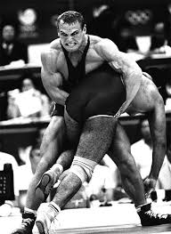

One of the biggest parts of my life is sports, especially competitive wrestling. Wrestling has taught me discipline, mental toughness, and how to push through challenges even when things get difficult. In addition to wrestling, I also train in boxing and mixed martial arts which helps me build strength and endurance. Training regularly requires commitment and consistency but I enjoy improving every day. Through sports I have learned the value of perseverance and self control. Learn more about wrestling here.
Another interest I have is philosophy which I enjoy learning about in my free time. Philosophy helps me understand different perspectives on life and human behavior. I enjoy exploring ideas about discipline, purpose, and living a meaningful life. Thinking about philosophical ideas helps me reflect on my goals and values. Philosophy connects well with sports because both require mental strength and awareness. Explore philosophy resources here.
At school I stay involved in activities like DECA and other clubs that help me develop leadership and communication skills. Outside of school I also help with my dad's business and different projects. Sometimes this involves traveling which allows me to see how real businesses operate. These experiences have helped me understand responsibility and entrepreneurship at a young age. Balancing sports, school, business and family helps me continue growing and improving. Learn more about DECA here.